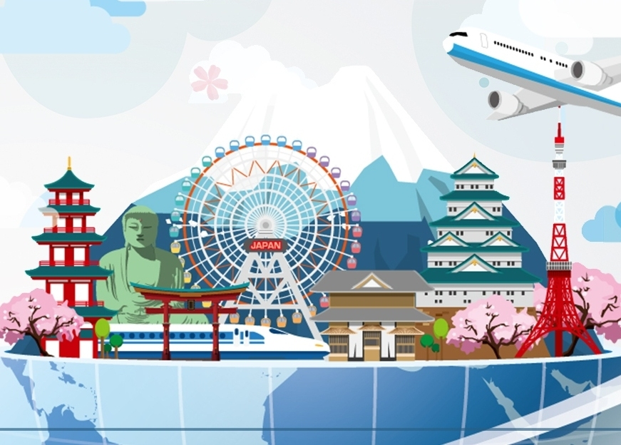

Menelusuri Keindahan dan Budaya Jepang |
|
|
|
Jepang (日本 Nippon atau Nihon) adalah sebuah negara kepulauan di Asia Timur yang beribukotakan Tokyo. Jepang identik dengan julukan
negeri matahari terbit atau negeri sakura. Tidak salah jika dikatakan demikian, dilihat dari bendera kebangsaan Jepang yang melambangkan matahari terbit.
Tentu bagi masyarakat Jepang memiliki filosofi tersendiri tetang makna dari matahari terbit tersebut. Kemudian, "Negeri Sakura" merupakan julukan
yang terdengar bagus. Ini dikarenakan Jepang memiliki banyak sekali pohon sakura yang akan bermekaran kala musim semi telah tiba.
|
Jepang merupakan negara maju, dari segi sosial, ekonomi dan juga teknologinya. Di Jepang, kita akan menemukan budaya tradisional berdampingan
dengan perkembangan teknologi. Kita bisa menemukan hal-hal unik lainnya di Jepang, dimana belum tentu dapat ditemui di negara lain. Karena itulah
yang menjadi ciri khas Jepang.
Mari kita telusuri beberapa hal-hal menarik yang dapat diulas mengenai Jepang di Website ini!
|
|  |
VISIT & ICONIC
Tempat-tempat terkenal dan ciri khas Jepang |
|
|
|
|
|